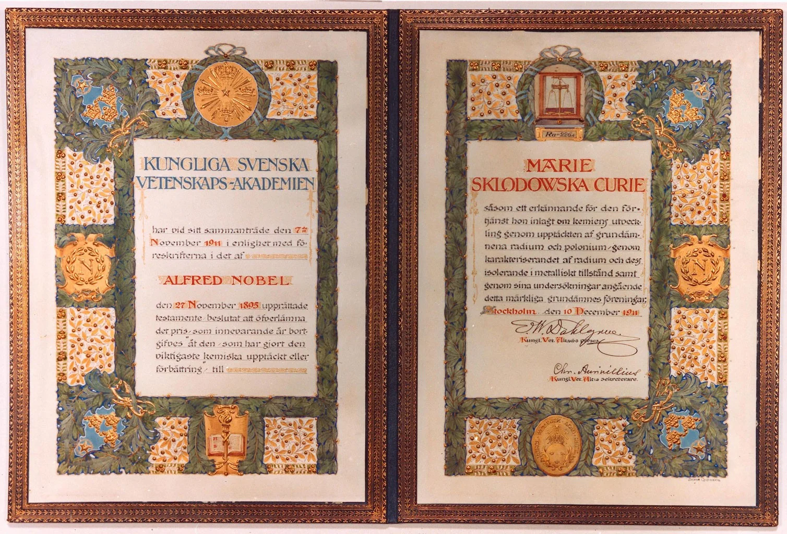
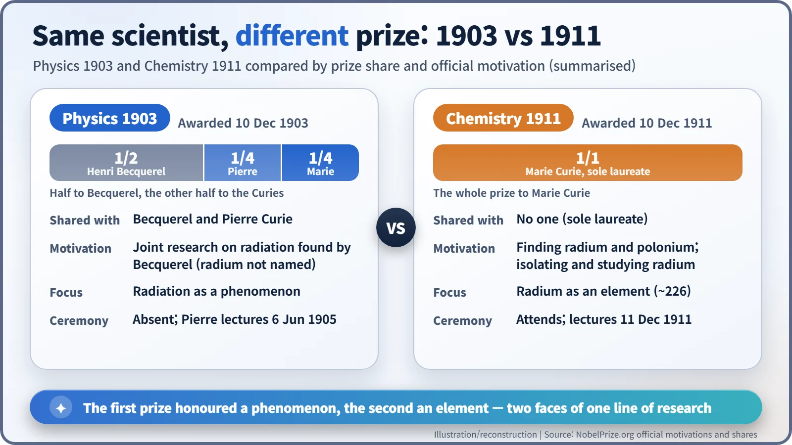
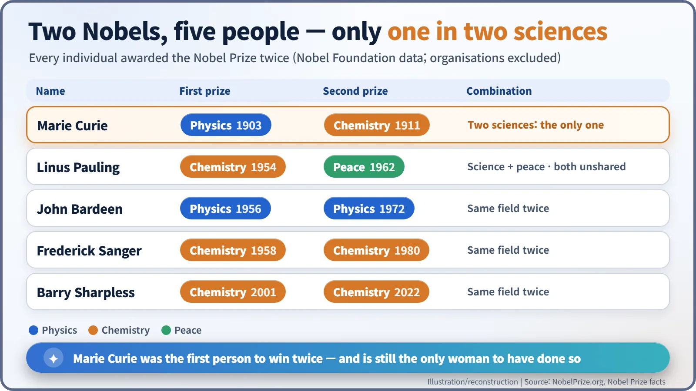

Nuclear History · 020
A Letter That Saved Her Name, a Balance That Proved an Element — Marie Curie's Two Nobel Prizes (1903, 1911)
A quarter share in physics in 1903, the whole prize in chemistry in 1911: one scientist, two sciences, two very different prizes.
Marie Curie almost missed her first Nobel Prize: in 1903 she was left off the nomination until Pierre Curie insisted she be considered with him. Eight years later, in the hardest year of her life, she won a second prize, alone and in a different science. She remains the only person honoured in two different sciences and the only woman to have won twice.
A letter that kept her name in
"If it is true that one is seriously thinking about me [for the Nobel Prize], I very much wish to be considered together with Madame Curie with respect to our research on radioactive bodies."
Pierre Curie (1859–1906) wrote those words in the summer of 1903 to the Swedish mathematician Gösta Mittag-Leffler (the letter was in French; this is the English translation used by the American Institute of Physics). Members of the Paris Academy of Sciences had put forward two names for that year's Nobel Prize in Physics: Henri Becquerel and Pierre. Missing was the person who had shared the work at every step, his wife, Marie Skłodowska-Curie (1867–1934). Mittag-Leffler, a known champion of women in science, tipped Pierre off. Pierre's reply left no room for doubt. [7] [10]

A quarter of a prize, and a first
The decision came in November 1903. Half of the prize went to Becquerel "for his discovery of spontaneous radioactivity". The other half went jointly to Pierre and Marie Curie "in recognition of the extraordinary services they have rendered by their joint researches on the radiation phenomena discovered by Professor Henri Becquerel". Marie's share was one quarter. It was still a milestone: she became the first woman ever to receive a Nobel Prize. [1]
Read the citation closely and something is missing: neither radium nor polonium is mentioned. Members on the chemistry side preferred to keep the new elements in reserve for a possible future chemistry prize, and some scientists were still wary of elements that existed only in specks. [7]
Only Becquerel attended the ceremony in Stockholm on 10 December 1903. The Curies asked for a delay, citing their teaching and Marie's poor health that year. Pierre finally gave the Nobel lecture on 6 June 1905. He warned that radium could be dangerous in the wrong hands, then closed on a hopeful note: "I am one of those who believe with Nobel that mankind will derive more good than harm from the new discoveries." [4] [10]

A wagon in the rain, and a lecture that carried on
On 19 April 1906, crossing a street in the Paris rain, Pierre was struck by a horse-drawn wagon and killed instantly. On 13 May the Faculty of Sciences of the University of Paris decided to give his course to Marie. She became the first woman to hold a professorship at the Sorbonne.
Her first lecture, on 5 November 1906, drew a packed hall. There was no eulogy. She simply gave a matter-of-fact account of the past decade of progress in physics. According to a story often told, she began with the very sentence on which Pierre's last lecture had ended; it is a lovely detail, but it rests on later retellings. [8]
Over the next four years Marie went after the kind of proof chemists trusted: something you could weigh. Working with pure radium salts, she measured radium's atomic weight again and again and arrived at about 226. In 1910, with her colleague André-Louis Debierne (1874–1949), she isolated radium in metallic form, starting from just one decigram (0.1 g) of salt. [3]
1911: the hardest year, the second prize
1911 opened badly. In January, Marie stood for election to the French Academy of Sciences and lost to Édouard Branly by two votes, 30 to 28. Newspapers argued over whether a woman could be admitted at all, and part of the right-wing press spread the false rumour that she was Jewish. Then, on 4 November, a Paris newspaper made public her relationship with the physicist Paul Langevin, and her private life became front-page material. [9]
In the middle of all this, on 7 November 1911, her 44th birthday, the Royal Swedish Academy of Sciences awarded her the Nobel Prize in Chemistry, unshared, "in recognition of her services to the advancement of chemistry by the discovery of the elements radium and polonium, by the isolation of radium and the study of the nature and compounds of this remarkable element." [2]

Svante Arrhenius, then a member of the Nobel Committee for Physics, wrote advising her to stay away from the ceremony. The irony: he had been one of the scientists who nominated her that year. Marie refused. The prize, she replied in substance, had been awarded for the discovery of radium and polonium, and she could not accept that the value of scientific work should be judged by slander about private life. [6]
On 10 December 1911 she received the prize in Stockholm, with her daughter Irène at her side. In her lecture the next day she reminded the audience that "the discoveries of radium and of polonium were made by Pierre Curie in collaboration with me", and said the award paid homage to his memory (her lecture was in French; this is the Nobel Foundation's English translation). [3]
The same work, rewarded twice?
It is a fair question. The answer lies in what each prize looked at. The 1903 physics prize honoured the study of radiation as a phenomenon: how much is emitted, and how it behaves. The 1911 chemistry prize honoured the proof that radium is a genuine element: a measured atomic weight, a place in the periodic table below barium, and a sample of the metal itself. That is why the diploma's artist painted a laboratory balance on it.

Not "the only person to win twice"
Marie Curie is often called the only person to win two Nobel Prizes. That is not quite right: five individuals have done it. What is true is sharper. She was the first. She is the only person to win in two different sciences (Linus Pauling's pair was chemistry and peace). And she is still the only woman to have won twice. The family's Nobel story would continue with her daughter Irène. [5]
